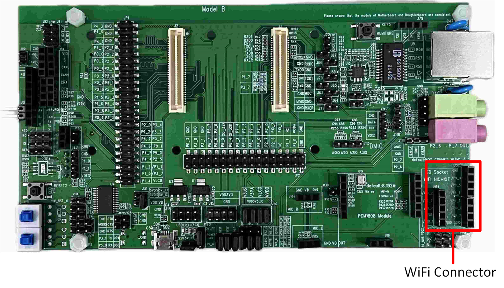
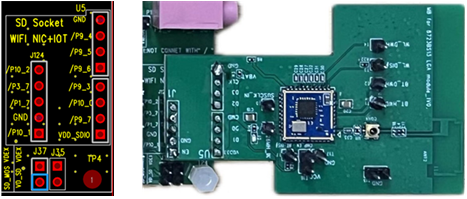
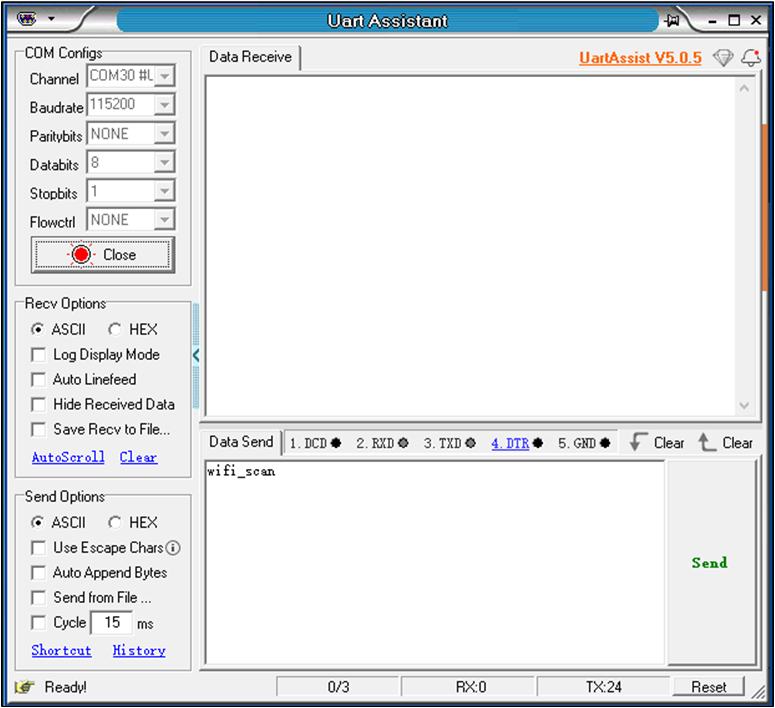
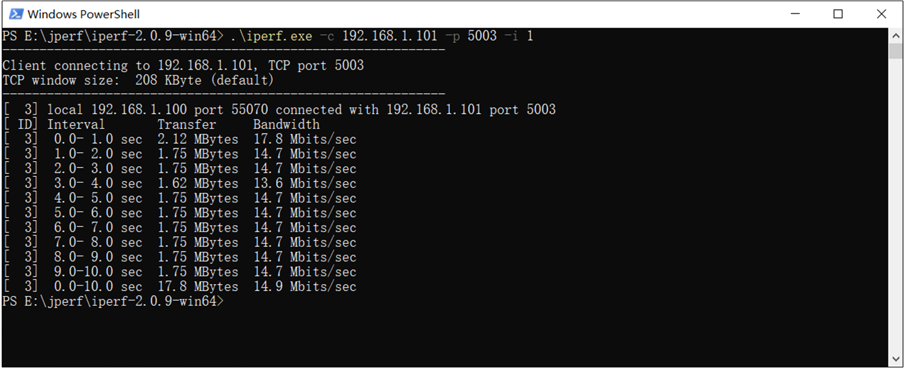
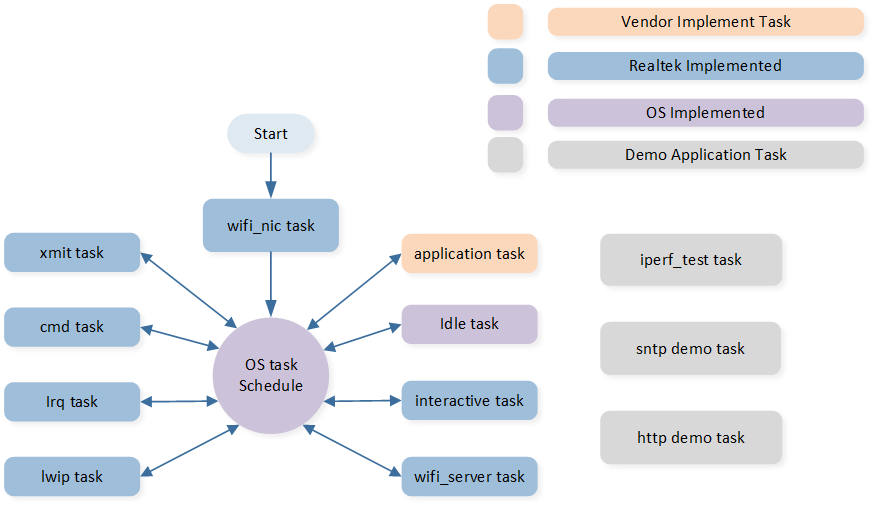

RTL8189FTV Wi-Fi Module
This document aims to guide developers in quickly setting up an RTL8189FTV Wi-Fi (referred to as the Wi-Fi below) development environment, including hardware and software requirements, macro definition configuration, testing steps, and code framework analysis, etc.
Requirements
RTL87x2G Model B EVB
RTL8189FTV Wi-Fi Model
ARM Keil MDK: https://developer.arm.com
BeeMPTool_kits: RealMCU
DebugAnalyzer: RealMCU
UartAssist: http://www.cmsoft.cn/resource/101.html
iperf: https://iperf.fr/
For more information, please refer to Quick Start .
Wiring
Debugging Wi-Fi functionality requires a Wi-Fi module to be assembled on the Model B EVB. Refer to the area marked in red in the Wi-Fi Installation Interface for the installation location of the Wi-Fi module on the EVB. Please refer to Wi-Fi Module for the Wi-Fi module and its installation method.
{kind=link}

Wi-Fi Installation Interface
{kind=link}

Wi-Fi Module
RTL87x2G supports communication with the Wi-Fi module through SPI and SDIO interfaces.
When using the SDIO interface, the pin configuration of RTL87x2G is fixed. For detailed information, please refer to Pin Definition.
When using the SPI interface, the pin configuration becomes more flexible, allowing developers to adjust according to actual needs.
Model B EVB |
SDIO |
SPI |
|---|---|---|
GND |
GND |
GND |
P9_4 |
CLK |
CLK |
P9_5 |
D3 |
CS |
P9_6 |
D2 |
x |
P9_3 |
CMD |
MOSI |
P10_0 |
D0 |
MISO |
P9_7 |
D1 |
INT |
VDD |
VDD |
VDD |
Hint
When using the SPI interface, the default definition is shown in Pin Definition. If changes are required, they can be made in the subsys\wifi_nic_driver\src\spi_module.c file.
In addition, since the Ethernet module and Wi-Fi module on the Model B EVB share the same set of SDIO interfaces, it is necessary to complete the hardware interface switch by referring to the Ethernet and SDIO Interface Switching section in the Model B Evaluation Board document before using the Wi-Fi module. Please refer to Evaluation Board Guide for a detailed introduction to the EVB.
Configurations
Macro Definition |
Function Description |
|---|---|
xxx_TASK_PRIORITY |
Used to configure the priority of each task. |
PERIPHERAL_TYPE |
Used to configure the type of Wi-Fi HCI interface (SDIO/SPI). |
SDIO_CLK_kHz |
Configures the CLK of SDIO. |
SDIO_DATA_WIDTH |
Configures the SDIO signal transmission mode, |
SUPPORT_INTERACTIVE_MODE |
UUsed to configure whether to enable UART debugging function, |
SUPPORT_FEATURE_SNTP |
Used to configure whether to enable SNTP function, |
SUPPORT_FEATURE_HTTP |
Used to configure whether to enable HTTP function, |
SUPPORT_MSG_SERVER |
Used to configure whether to enable message event processing function, |
SUPPORT_AUTO_CONNECT |
Used to configure whether to enable the function of automatically connecting to AP at startup, |
Attention
The macro configurations related to Wi-Fi and common API definitions are located in wifi_nic_intf.h.
The macro configurations under Fixed parameters are involved in the compilation of the lib file, so please do not change them randomly.
Developers can modify the macro definitions under Variable parameters.
Building and Downloading
This sample can be found in the SDK folder:
Project file: samples\wifi_nic\proj\mdk
Project file: samples\wifi_nic\proj\gcc
To build and run the sample, follow the steps listed below:
Open the project file.
To build the target, follow the steps listed in the Generating App Image section in Quick Start.
After a successful compilation, the app bin
app_MP_sdk_xxx.binwill be generated in the directorysamples\wifi_nic\proj\mdk\bin. If GCC is used for compilation, the generated bin file will be located atsamples\wifi_nic\proj\gcc\bin.To download the app bin into the EVB board, follow the steps listed in the Images Download section in Quick Start.
Press the reset button on the EVB board and it will start running.
Experimental Verification
Wi-Fi Initialization Verification
After the EVB board is powered on, if there is a log 'wifi_nic_on ok', it means that Wi-Fi has been initialized normally.
[APP] [wifi_nic] RTL871X: _8051Reset8188: Finish
[APP] [wifi_nic] RTL871X: _FWFreeToGo: Polling FW ready OK! (248, 14ms), REG_MCUFWDL:0x070405c6
[APP] [wifi_nic] RTL871X: rtl8188f_FirmwareDownload: DLFW OK !
[APP] [wifi_nic] RTL871X: rtl8188f_FirmwareDownload success. write_fw:1, 236ms
[APP] [wifi_nic] RTL871X: <=== rtl8188f_FirmwareDownload()
[APP] [wifi_nic] RTL871X: Set RF Chip ID to RF_6052 and RF type to 0.
[APP] [wifi_nic] RTL871X: MAC Address = 2c:c3:e6:be:91:9f
[APP] [wifi_nic] xmit_thread priority = 6 TaskHandle_t addr = 0x123e2c
[APP] [wifi_nic] cmd_thread priority = 3 TaskHandle_t addr = 0x123e14
[APP] [wifi_nic] RTL871X: -871x_drv - dev_open, bup=1
[APP] [wifi_nic] WIFI initialized
[APP] [wifi_nic] wifi_nic_on ok
If the macro SUPPORT_AUTO_CONNECT is set to 1 (default value is 1), Wi-Fi will automatically execute wifi_nic_scan() after initialization, scanning for the specified AP (the default SSID is 86box_demo, and the password is 123123123), and the scanning result will be printed out through the log. If the specified AP is not detected, the scan operation will be performed every 3 seconds.
[APP] [wifi_nic] RTL871X: survey done event(129)
[APP] [wifi_nic] RTL871X: +indicate_wx_scan_complete_event
[APP] [wifi_nic] wifi nic scan done user data = 86box_demo
[APP] [wifi_nic] 1:Infra 58:41:20:1a:0c:0f -44 1 6 WPA/WPA2 PSK WN_LG2
[APP] [wifi_nic] 2:Infra f8:6f:b0:18:cb:b6 -46 1 6 Open TP-LINK_CH1
[APP] [wifi_nic] 3:Infra 5c:de:34:10:bb:a0 -46 6 7 WPA/WPA2 PSK CMCC-2X9d
[APP] [wifi_nic] 6:Infra 78:60:5b:3f:99:6d -48 6 6 WPA/WPA2 PSK WN_BT
[APP] [wifi_nic] 7:Infra 62:e6:f9:0b:2f:c2 -56 1 7 WPA2 AES PSK huawei-ax3_2g
[APP] [wifi_nic] 8:Infra 00:19:29:00:88:9f -56 6 7 WPA/WPA2 PSK ChinaNet-2.4G
[APP] [wifi_nic] 9:Infra 9c:9d:7e:57:11:92 -58 1 7 WPA2 AES PSK Redmi_FA2C
...
If the specified AP is successfully scanned, the Wi-Fi connection will then be initiated. If the connection to the AP fails, the scan will continue to be performed.
UART CMD Verification
During the development process, developers can control the Wi-Fi module by sending specific CMDs through the UART interface.
On RTL87x2G, the definition of the UART pins is as follows: P3_0 is defined as UART TX, P3_1 is defined as UART RX,
and the default baud rate for the serial port is set to 115200.
For detailed configuration code, please refer to sdk\samples\wifi_nic\src\wifi_nic_task\uart_transport.c .
Refer to Serial Port Parameter Configuration for the configuration of the serial tool on the PC side.
{kind=link}

Serial Port Parameter Configuration
Wi-Fi Scan
Command |
wifi_scan |
|---|---|
Overview |
Launching the Wi-Fi scanning feature. |
Format |
wifi_scan |
Parameters |
None |
Example |
wifi_scan |
Developers send wifi_scan to the RTL87x2G via the PC serial port tool. After the RTL87x2G receives the command, it echoes back via the Log, starts the Wi-Fi scanning feature, and displays the results of the Wi-Fi scan.
[APP] [wifi_nic] CMD : wifi_scan
[APP] [wifi_nic] [MEM] After do cmd, RAM_TYPE_DATA_ON = 70600, RAM_TYPE_BUFFER_ON = 25000
[APP] [wifi_nic] RTL871X: survey done event(255)
[APP] [wifi_nic] RTL871X: +indicate_wx_scan_complete_event
[APP] [wifi_nic] 1:Infra 58:41:20:1a:0c:0f -44 1 6 WPA/WPA2 PSK WN_LG2
[APP] [wifi_nic] 2:Infra f8:6f:b0:18:cb:b6 -46 1 6 Open TP-LINK_CH1
[APP] [wifi_nic] 3:Infra 5c:de:34:10:bb:a0 -46 6 7 WPA/WPA2 PSK CMCC-2X9d
[APP] [wifi_nic] 6:Infra 78:60:5b:3f:99:6d -48 6 6 WPA/WPA2 PSK WN_BT
[APP] [wifi_nic] 7:Infra 62:e6:f9:0b:2f:c2 -56 1 7 WPA2 AES PSK huawei-ax3_2g
[APP] [wifi_nic] 8:Infra 00:19:29:00:88:9f -56 6 7 WPA/WPA2 PSK ChinaNet-2.4G
[APP] [wifi_nic] 9:Infra 9c:9d:7e:57:11:92 -58 1 7 WPA2 AES PSK Redmi_FA2C
...
Wi-Fi Connect
Command |
wifi_connect |
|---|---|
Overview |
Connect to the Specified AP. |
Format |
wifi_connect <SSID> [PASSWORD] |
Parameters |
SSID: SSID name of the AP. PASSWORD: AP connection password. |
Example |
wifi_connect 86box_demo 123123123 |
For example, to connect to an AP with the SSID of 86box_demo, the developer sends wifi_connect 86box_demo 123123123 to the RTL87x2G through a PC serial port tool. After receiving the command, the RTL87x2G will activate the Wi-Fi connection function.
[APP] [wifi_nic] CMD : wifi_connect 86box_demo 123123123
[APP] [wifi_nic] RTL871X: wpa_set_auth_algs, AUTH_ALG_OPEN_SYSTEM
[APP] [wifi_nic] RTL871X: wpa_set_encryption()=>dot11AuthAlgrthm=0, ndisauthtype=7, ndisencryptstatus=1, dot11PrivacyAlgrthm=4, dot118021XGrpPrivacy=4
[APP] [wifi_nic] RTL871X: set wpa passphrase=123123123, len=9
[APP] [wifi_nic] RTL871X: wpa passphrase=123123123, len=9
[APP] [wifi_nic] RTL871X: =>rtw_wx_set_essid
[APP] [wifi_nic] RTL871X: ssid=86box_demo, len=10
[APP] [wifi_nic] RTL871X: set ssid [86box_demo]
...
Once successfully connected to the AP, it will automatically initialize LWIP by default and obtain an IP address via the DHCP functionality.
...
[APP] [wifi_nic] RTL871X: set group key to hw: alg:4(WEP40-1 WEP104-5 TKIP-2 AES-4) keyid:1
[APP] [wifi_nic] Connected after 2889ms.
[APP] [wifi_nic] [MEM] After do cmd, RAM_TYPE_DATA_ON = 70048, RAM_TYPE_BUFFER_ON = 25000
[APP] [LWIP] low_level_init() MAC Addr= 2c:c3:e6:be:91:9f
[APP] [LWIP] lwip_net_status_callback() netif_is_up dhcp->state : 0
[APP] [wifi_nic] TCPIP_Init ok
[APP] [wifi_nic] lwip dhcp_start success...
[APP] [LWIP] lwip_net_status_callback() netif_is_up dhcp->state : 10
[APP] [LWIP] lwip_net_status_callback() IP: 192.168.72.195
If the connection to the AP fails, a log stating 'ERROR: Operation failed!' will be prompted.
...
[APP] [wifi_nic] RTL871X: rtw_select_and_join_from_scanned_queue: return _FAIL(candidate == NULL)
[APP] [wifi_nic] RTL871X: try_to_join, but select scanning queue fail
[APP] [wifi_nic] RTL871X: indicate_wx_custom_event No Assoc Network After Scan Done
[APP] [wifi_nic] wifi_nic_disconnect_cb() wifi_state = 2 , user_data = disconnect user data
[APP] [wifi_nic] wifi_nic_disconnect_cb() error_flag = RTW_NONE_NETWORK
[APP] [wifi_nic] ERROR: Operation failed!
Wi-Fi Disconnect
Command |
wifi_disconnect |
|---|---|
Overview |
Disconnect the connected AP. |
Format |
wifi_disconnect |
Parameters |
None |
Example |
wifi_disconnect |
Developers send wifi_disconnect to RTL87x2G through the PC serial port tool. After receiving the command, RTL87x2G will disconnect the Wi-Fi connection and disable the DHCP function of LWIP.
[APP] [wifi_nic] CMD : wifi_disconnect
[APP] [wifi_nic] Deassociating AP ...
[APP] [wifi_nic] RTL871X: issue_deauth to 46:37:a4:0e:0f:1e
[APP] [wifi_nic] RTL871X: update_mgnt_tx_rate(): rate = 2
[APP] [wifi_nic] RTL871X: HW_VAR_BASIC_RATE: 0x15f -> 0x15f -> 0x15f
[APP] [wifi_nic] wifi_nic_disconnect_cb() wifi_state = 5 , user_data = disconnect user data
[APP] [wifi_nic] wifi_nic_disconnect_cb() dhcp stop
[APP] [LWIP] lwip_net_status_callback() netif_is_up dhcp->state : 0
[APP] [wifi_nic] RTL871X: rtw_free_stainfo(): 46:37:a4:0e:0f:1e
[APP] [wifi_nic] RTL871X: ### Clean STA_(0) info ###
[APP] [wifi_nic] ioctl[SIOCGIWESSID] ssid = NULL, not connected
[APP] [wifi_nic] WIFI disconnect ok
Iperf Server
Command |
iperf |
|---|---|
Overview |
Start iperf server testing function. |
Format |
iperf tcp -s |
Parameters |
None |
Example |
iperf tcp -s |
After successfully connecting to the AP, the developer sends iperf tcp -s to RTL87x2G via PC terminal tool. Upon receiving the command, RTL87x2G will create an iperf TCP server. If successfully created, it prints out the IP of the server and the port number it listens to (default is 5003).
[APP] [wifi_nic] CMD : iperf tcp -s
[APP] [wifi_nic] [MEM] After do cmd, RAM_TYPE_DATA_ON = 71488, RAM_TYPE_BUFFER_ON = 25000
[APP] [wifi_nic] tcp_server start
[APP] [wifi_nic] <tcp_server> Bind socket successfully!
[APP] [wifi_nic] <tcp_server> Server ip : 192.168.1.101
[APP] [wifi_nic] <tcp_server> Listen port: 5003
After the creation of the iperf server, a connection can be initiated on the PC side by launching an iperf client, starting method: enter command iperf.exe -c 192.168.1.101 -p 5003 -i 1 in a PowerShell window, refer to Starting Iperf Client on PC Side. Once the iperf client successfully connects to the server, the speed test begins. RTL87x2G also prints out the current speed test results via Log.
{kind=link}

Starting Iperf Client on PC Side
[APP] [wifi_nic] CMD :iperf tcp -s
[APP] [wifi_nic] [MEM] After do Cmd, RAM_TYPE_DATA_ON = 69200, RAM_TYPE_BUFFER_ON = 25000
[APP] [wifi_nic] tcp server start
[APP] [wifi_nic] <tcp server> Bind socket successfully!
[APP] [wifi_nic] <tcp server> Server ip : 192.168.1.101
[APP] [wifi_nic] <tcp server> Listen port: 5003
[APP] [wifi_nic] TCP: Receive 1870 KBytes in 1000 ms, 15321 Kbits/sec
[APP] [wifi_nic] WIFI RSSI= -31
[APP] [wifi_nic] TCP: Receive 1842 KBytes in 1000 ms, 15091 Kbits/sec
[APP] [wifi_nic] WIFI RSSI= -31
[APP] [wifi_nic] TCP: Receive 1702 KBytes in 1000 ms, 13950 Kbits/sec
[APP] [wifi_nic] WIFI RSSI= -31
[APP] [wifi_nic] TCP: Receive 1710 KBytes in 1000 ms, 14008 Kbits/sec
[APP] [wifi_nic] WIFI RSSI= -31
[APP] [wifi_nic] TCP: Receive 1805 KBytes in 1000 ms, 14791 Kbits/sec
[APP] [wifi_nic] WIFI RSSI= -31
[APP] [wifi_nic] TCP: Receive 1798 KBytes in 1000 ms, 14734 Kbits/sec
[APP] [wifi_nic] WIFI RSSI= -31
[APP] [wifi_nic] TCP: Receive 1742 KBytes in 1000 ms, 14273 Kbits/sec
[APP] [wifi_nic] WIFI RSSI= -31
[APP] [wifi_nic] TCP: Receive 1769 KBytes in 1000 ms, 14492 Kbits/sec
[APP] [wifi_nic] WIFI RSSI= -31
[APP] [wifi_nic] TCP: Receive 1849 KBytes in 1000 ms, 15148 Kbits/sec
[APP] [wifi_nic] WIFI RSSI= -31
[APP] [wifi_nic] TCP: Receive 1802 KBytes in 1000 ms, 14768 Kbits/sec
[APP] [wifi_nic] WIFI RSSI= -31
[APP] [wifi_nic] TCP: [END] Totally Receive 18176 KBytes, total rate = 14656 Kbits/sec
After the test, developers can send iperf stop to RTL87x2G through the PC-side serial port tool to shut down the iperf server.
[APP] [wifi_nic] CMD : iperf stop
[APP] [wifi_nic] iperf_test_thread stop
Iperf Client
Command |
iperf |
|---|---|
Overview |
Start iperf server test function. |
Format |
iperf tcp -c <ip> <port> |
Parameters |
ip: The IP address or hostname of the server. port: The listening port number of the server. |
Example |
iperf tcp –c 192.168.1.100 5001 |
Before running iperf client, it's necessary to create a server first. Enter command iperf.exe -s -i 1 in the PowerShell window on the PC to start an iperf server, refer to PC Side Creates Iperf Server. Assuming the IP of the PC side is 192.168.1.100 and the listening port number is 5001. Developers send iperf tcp -c 192.168.1.100 5001 to RTL87x2G through the PC-side serial port tool. After receiving the instructions, RTL87x2G will create an iperf tcp client and try to establish a connection with the server. After successful connection, it will print 'Connect to iperf server successful!' through Log and display the current speed test results every second.

PC Side Creates Iperf Server
[APP] [wifi_nic] CMD : iperf tcp -c 192.168.1.100 5001
[APP] [wifi_nic] IP =192.168.1.100, port = 5001
[APP] [wifi_nic] [MEM] After do md, RAM_TYPE_DATA_ON = 69200, RAM_TYPE_BUFFER_ON = 25000
[APP] [wifi_nic] tcp client start
[APP] [wifi_nic] <tcp client>:Connect to iperf server successful! ret = 0
[APP] [wifi_nic] TCP: Send 1260 KBytes in 1001 ms, 10314 Kbits/sec
[APP] [wifi_nic] WIFI RSSI= -33
[APP] [wifi_nic] TCP: Send 1432 KBytes in 1000 ms, 11738 Kbits/sec
[APP] [wifi_nic] WIFI RSSI= -33
[APP] [wifi_nic] TCP: Send 1448 KBytes in 1000 ms, 11866 Kbits/sec
[APP] [wifi_nic] WIFI RSSI= -33
[APP] [wifi_nic] TCP: Send 1375 KBytes in 1004 ms, 11226 Kbits/sec
[APP] [wifi_nic] WIFI RSSI= -33
[APP] [wifi_nic] TCP: Send 1365 KBytes in 1000 ms, 11189 Kbits/sec
[APP] [wifi_nic] WIFI RSSI= -33
[APP] [wifi_nic] TCP: Send 1401 KBytes in 1000 ms, 11481 Kbits/sec
[APP] [wifi_nic] WIFI RSSI= -33
[APP] [wifi_nic] TCP: Send 1464 KBytes in 1001 ms, 11983 Kbits/sec
[APP] [wifi_nic] WIFI RSSI= -33
[APP] [wifi_nic] CMD : iperf stop
[APP] [wifi_nic] [MEM] After do Cmd, RAM_TYPE_DATA_ON= 67472, RAM_TYPE_BUFFER_ON = 25000
[APP] [wifi_nic] TCP: [END] Totally send 10202 KBytes, total rate = 11437 Kbits/sec
[APP] [wifi_nic] tcp client stop
Upon completion of the test, developers can send iperf stop to RTL87x2G through the PC-side serial port tool to close the iperf client.
Code Overview
The main purpose of this chapter is to help APP developers become familiar with the development process related to Wi-Fi. This chapter will be introduced according to the following several parts.
The Software Architecture section will analyze the software architecture of this example code.
The Tasks and Their Priorities section will analyze the roles of various tasks and the priority settings.
The Wi-Fi State Machine section will analyze the state machine of Wi-Fi and state transition relationships.
The Interactive Mode section will analyze how the system receives and handles UART commands.
The Application Example section will provide application example code for Wi-Fi, such as iperf, SNTP, etc.
The Important APIs section will list and introduce important APIs.
Source Code Directory
Project directory:
sdk\samples\wifi_nic\projSource code directory:
sdk\samples\wifi_nic\src
Source files in the Wi-Fi sample project are currently categorized into several groups as below.
└── Project: wifi_nic
└── secure_only_app
└── Device includes startup code
├── startup_rtl.c
└── system_rtl.c
├── CMSE Library Non-secure callable lib
├── Lib includes all binary symbol files that user application is built on
├── Peripheral includes all peripheral drivers and module code used by the application
└── APP includes the Wi-Fi user application implementation
└── main.c
└── lwip/user includes Realtek platform layer source code based on LWIP
├── ethernetif.c
├── sys_arch.c
└── wifi/startup includes code for Wi-Fi initialization
├── wifi_nic_task.c
├── wifi_nic_cb.c
└── wifi/msg_server includes code for Wi-Fi IO_MSG processing
├── wifi_nic_msg.c
└── wifi/interactive includes code for parsing and handling Wi-Fi interaction commands
├── uart_transport.c
├── interactive_task.c
└── wifi/demo includes the Wi-Fi demo application implementation
├── iperf_test.c
├── sntp_demo.c
└── http_demo.c
└── wifi/lib includes all binary symbol files that user application is built on
├── wlan-8189ftv-sdio-rtl87x2g.lib
├── wifi-nic-driver-sdio.lib
└── lwip.lib
Software Architecture
The System Architecture of the Wi-Fi system can be divided into the following part.
Interactive CMD: Developers can use interactive commands to configure or get the status of Wi-Fi, which is very useful for debugging.
Configuration API: Developers can call the configuration API to control the Wi-Fi chip, implementing operations such as scanning, connecting, etc.
Network Stack: This part has ported the commonly used LWIP protocol stack.
Host Controller: HCI is the communication interface between the host and the Wi-Fi chip, responsible for the exchange of information between the platform and the Wi-Fi chip.
Wi-Fi Driver Library: The driver software of the Wi-Fi chip.
FreeRTOS: Provides operations such as task scheduling and resource management.

System Architecture
Tasks and Their Priorities
{kind=link}

Task
The description and priority of each task are as follows.
Task |
Priority |
Description |
Prerequisite |
|---|---|---|---|
wifi_nic |
2 |
Task to complete Wi-Fi driver initialization. |
Automatically deleted after Wi-Fi initialization is completed. |
lwip |
5 |
LWIP kernel thread. |
Always run after LWIP initialization is completed. |
xmit |
6 |
Task to send Wi-Fi packets. |
Run after Wi-Fi is enabled. |
cmd |
3 |
Task to process internal CMD in Wi-Fi driver. |
Run after Wi-Fi is enabled. |
irq |
4 |
Task to receive HCI data, equivalent to interrupt service routine. |
Run after Wi-Fi is enabled. |
interactive |
2 |
Task to receive and process UART instructions, convenient for developers to debug. |
Whether to start is determined by the macro SUPPORT_INTERACTIVE_MODE. |
wifi_server |
2 |
Task to process message events |
Whether to start is determined by the macro SUPPORT_MSG_SERVER. |
iperf_test |
2 |
iperf demonstration application. |
Automatically created when the speed test starts and automatically deleted after the speed test ends. |
sntp |
2 |
sntp demonstration application. |
Whether to start is determined by the macro SUPPORT_FEATURE_SNTP. |
http |
2 |
http demonstration application. |
Whether to start is determined by the macro SUPPORT_FEATURE_HTTP. |
Idle |
0 |
Run background tasks. |
Always running. |
Wi-Fi State Machine
In the process of running, the system will switch among the following states of Wi-Fi.
State |
Description |
|---|---|
WIFI_STATE_OFF |
Wi-Fi driver OFF state. |
WIFI_STATE_ON |
Wi-Fi driver startup state. |
WIFI_STATE_CONNECTING |
Wi-Fi start connecting. |
WIFI_STATE_L2CONNECTED |
Wi-Fi connected to AP. |
WIFI_STATE_OBTAININGIP |
Wi-Fi is obtaining IP address. |
WIFI_STATE_CONNECTED |
Wi-Fi connected state. |
Interactive Mode
Developers can use interactive commands to debug and configure the Wi-Fi module. These commands are input into the RTL87x2G via the UART interface, and the specific process is as follows.

Command Processing Flow
Developers only need to set the macro SUPPORT_INTERACTIVE_MODE to 1 to use this feature. Common interactive commands are shown in the following table.
Command |
Description |
|---|---|
wifi_connect |
Connect to the specified AP. |
wifi_disconnect |
Disconnect from the connected AP. |
wifi_on |
Enable the Wi-Fi module. |
wifi_off |
Disable the Wi-Fi module. |
wifi_scan |
Start the Wi-Fi scan feature. |
iperf |
iperf speed test. |
For how to debug the Wi-Fi module using interactive commands, please refer to UART CMD Verification.
For interactive task code, please refer to sdk\samples\wifi_nic\src\wifi_nic_task\interactive_task.c
Application Example
Iperf Demo
The iperf is a cross-platform network performance testing tool based on the Client/Server model. It can test the bandwidth performance of TCP / UDP and provides statistical information such as network throughput, latency jitter, packet loss rate, and maximum transmission unit. This information helps developers understand network performance issues, pinpoint network bottlenecks, and thus resolve network failures.
The iperf network speed test tool can be obtained from the Iperf Official Website . For specific usage methods, please refer to Iperf User Docs .
The iperf TCP speed test code has been included in the SDK, located at sdk\samples\wifi_nic\src\wifi_nic_task\iperf_test.c .
Developers can use interactive commands to conduct tests,
refer to Iperf Server and Iperf Client .
For iperf demo code, please refer to sdk\samples\wifi_nic\src\wifi_nic_task\iperf_test.c .
SNTP Demo
The SNTP is a branch of the development of the NTP, SNTP uses a simpler method for network clock synchronization. The SNTP protocol works on a client-server structure, operating in either unicast (one-to-one) or broadcast (one-to-many) mode.
In unicast mode, the SNTP client can obtain accurate time information by regularly visiting the NTP server, which is used to adjust the system time of the client itself, thus achieving time synchronization.
In broadcast mode, the NTP server periodically sends messages to designated IP broadcast addresses or IP multicast addresses. SNTP clients obtain time information by listening to these addresses.
The SNTP packet format refers to SNTPv4 . According to the SNTP protocol, the total number of seconds of the current time is in slots 40 to 43 of the data packet.
It is worth noting that the timestamp returned by the NTP server is an NTP timestamp, while the time in daily life is based on UTC. Therefore, it is necessary to convert the NTP timestamp to a UTC timestamp.
In summary, the steps to obtain the time from NTP server are as follows.
Connect to the NTP server using the UDP protocol.
Send SNTP packets to the NTP server.
Retrieve the data returned from the SNTP server, taking the hexadecimal value from the 40th to the 43rd place.
Convert NTP time to UTC time.
Use the time library to convert the total seconds into year, month, day, hour, minute, and second.
For SNTP demo code, please refer to sdk\samples\wifi_nic\src\wifi_nic_task\sntp_demo.c
HTTP Demo
The HTTP is an application-layer protocol for distributed, collaborative, and hypermedia information systems. Embedded devices such as sensors, controllers, or other IoT devices, can use the HTTP protocol to connect to the Internet to send or receive data. The main advantage of the HTTP protocol is that it is based on the request-response model, enabling embedded devices to send requests and receive corresponding responses. Since the devices do not need to maintain a continuously active connection but only need to send requests when needed, it simplifies the programming and design of the devices. In addition, the HTTP protocol is also known for its openness and extensibility. It supports various request methods like GET, POST, etc., allowing embedded devices to retrieve, send, update, or delete data. At the same time, the HTTP protocol also supports various media types, allowing embedded devices to send and receive data in various formats, such as text, images, audio, video, etc.
Here's an example of how to apply the HTTP protocol using real-time weather information from the Seniverse .
First, you need to register on the Seniror Weather Network and obtain an API key, referring to Getting Started . Once you have the key, you can construct a request message. The request message contains the request method, URL, protocol version, request header, and request data. The server responds with a status line, and the response content includes the protocol version, success or error codes, server information, response headers, and response data, etc.
The construction method of the request message can be referred to in the following code.
#define HOST_NAME "api.seniverse.com"
#define HOST_PORT 80
#define PRIVATE_KEY "your_private_key" //your private key
#define LOCATION "beijing"
#define URL "/v3/weather/now.json?key=" PRIVATE_KEY "&location=" LOCATION "&language=en&unit=c"
#define HTTPC_CLIENT_AGENT "lwIP/" LWIP_VERSION_STRING
/* GET request with proxy */
#define HTTPC_REQ_11_PROXY "GET http://%s%s HTTP/1.1\r\n" /* HOST, URI */\
"User-Agent: %s\r\n" /* User-Agent */ \
"Accept: */*\r\n" \
"Host: %s\r\n" /* server name */ \
"Connection: Close\r\n" /* we don't support persistent connections, yet */ \
"\r\n"
#define HTTPC_REQ_11_PROXY_FORMAT(host, uri, srv_name) HTTPC_REQ_11_PROXY, host, uri, HTTPC_CLIENT_AGENT, srv_name
The steps to send an HTTP request are as follows.
Create a TCP client and connect to the Web server (the default HTTP port number is 80).
Send a request message to the Web server through TCP socket.
Wait for the Web server to return an HTTP response.
Disconnect the TCP connection.
Parse the HTML content.
For HTTP demo code, please refer to sdk\samples\wifi_nic\src\wifi_nic_task\http_demo.c
Important APIs
wifi_nic_on
Function Name |
wifi_nic_on |
|---|---|
Function Prototype |
int wifi_nic_on(void) |
Function Description |
This function is used to enable Wi-Fi. |
Input Parameter |
None |
Output Parameter |
None |
Return Value |
If the function succeeds, the return value is 0. |
Prerequisite |
None |
wifi_nic_off
Function Name |
wifi_nic_off |
|---|---|
Function Prototype |
int wifi_nic_off(void) |
Function Description |
This function is used to disable Wi-Fi. |
Input Parameter |
None |
Output Parameter |
None |
Return Value |
If the function succeeds, the return value is 0. |
Prerequisite |
None |
wifi_nic_scan
Function Name |
wifi_nic_scan |
|---|---|
Function Prototype |
void wifi_nic_scan(rtw_scan_result_handler_t results_handler, void *user_data) |
Function Description |
This function is used to initiate a scan to search for 802.11 networks. |
Input Parameter1 |
results_handler: The callback function which will receive and process the result data. |
Input Parameter2 |
user_data: The user-specific data that will be passed directly to the callback function. |
Output Parameter |
None |
Return Value |
If the function succeeds, the return value is 0. |
Prerequisite |
The callback must not use blocking functions, since it is called from the context of the thread. The callback and user_data variables will be referenced after the function returns. Those variables must remain valid until the scan is complete. |
wifi_nic_connect
Function Name |
wifi_nic_connect |
|---|---|
Function Prototype |
int wifi_nic_is_connect (char *ssid, char *password) |
Function Description |
This function is used to trigger connection to a WIFI network. |
Input Parameter1 |
ssid: The SSID name of the network to connect. |
Input Parameter2 |
password: The password of the network to connect. |
Output Parameter |
None |
Return Value |
If the function succeeds, the return value is 0. |
Prerequisite |
None |
wifi_nic_disconnect
Function Name |
wifi_nic_is_disconnect |
|---|---|
Function Prototype |
int wifi_nic_is_disconnect (void) |
Function Description |
This function is used to trigger disconnection from the current WIFI network. |
Input Parameter |
None |
Output Parameter |
None |
Return Value |
If the function succeeds, the return value is 0. |
Prerequisite |
None |
wifi_nic_wlan_send
Function Name |
wifi_nic_wlan_send |
|---|---|
Function Prototype |
int wifi_nic_wlan_send(int idx, T_ETH_DRV_SG *sg_list, int sg_len, int total_len) |
Function Description |
This function is called by the network stack, it allocates one skb according to the packet length, then converts the packet from T_ETH_DRV_SG type to skb type, and transmits the skb to the driver. |
Input Parameter1 |
idx: Network interface index, indicating the WIFI interface which transmits the packet. |
Input Parameter2 |
sg_list: One pointer pointing to one struct T_ETH_DRV_SG type array which stores the packet generated by the network stack. |
Input Parameter3 |
sg_len: Represents the actual used member's number of the struct T_ETH_DRV_SG array. |
Input Parameter4 |
total_len: Total length of this packet to be transmitted. |
Output Parameter |
None |
Return Value |
If the function succeeds, the return value is 0. |
Prerequisite |
None |
wifi_nic_wlan_recv
Function Name |
wifi_nic_wlan_recv |
|---|---|
Function Prototype |
int wifi_nic_wlan_recv(int idx, T_ETH_DRV_SG *sg_list, int sg_len) |
Function Description |
This function is called by the network stack, it allocates one skb according to the packet length, then converts the packet from T_ETH_DRV_SG type to skb type, and transmits the skb to the driver. |
Input Parameter1 |
idx: Network interface index, indicating the WIFI interface which transmits the packet. |
Input Parameter2 |
sg_list: One pointer pointing to one struct T_ETH_DRV_SG type array which stores the packet generated by the network stack. |
Input Parameter3 |
sg_len: Represents the actual used member's number of the struct T_ETH_DRV_SG array. |
Output Parameter |
None |
Return Value |
If the function succeeds, the return value is 0. |
Prerequisite |
None |